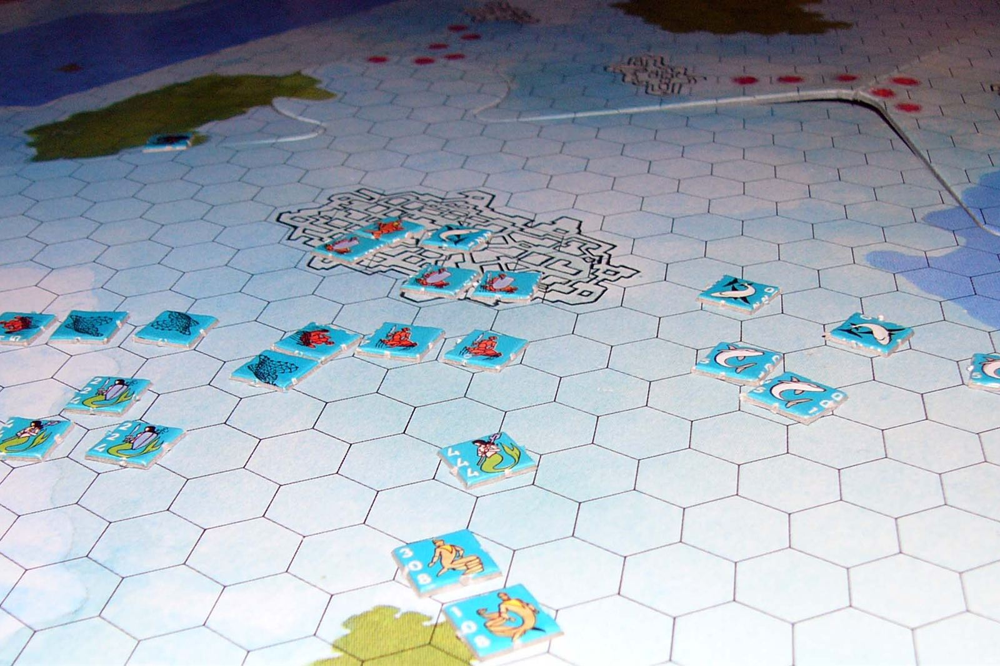
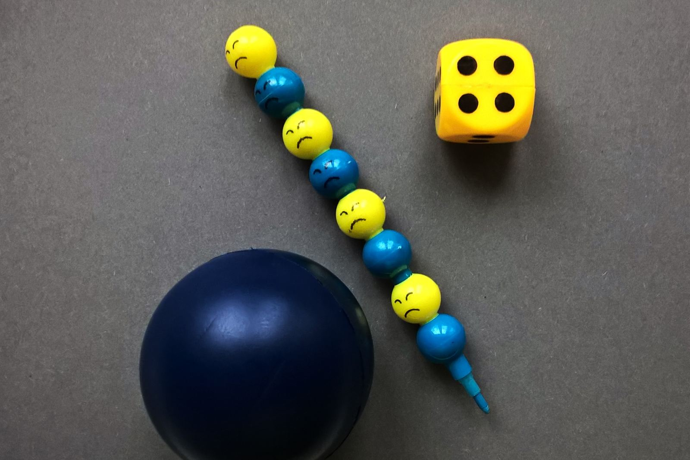
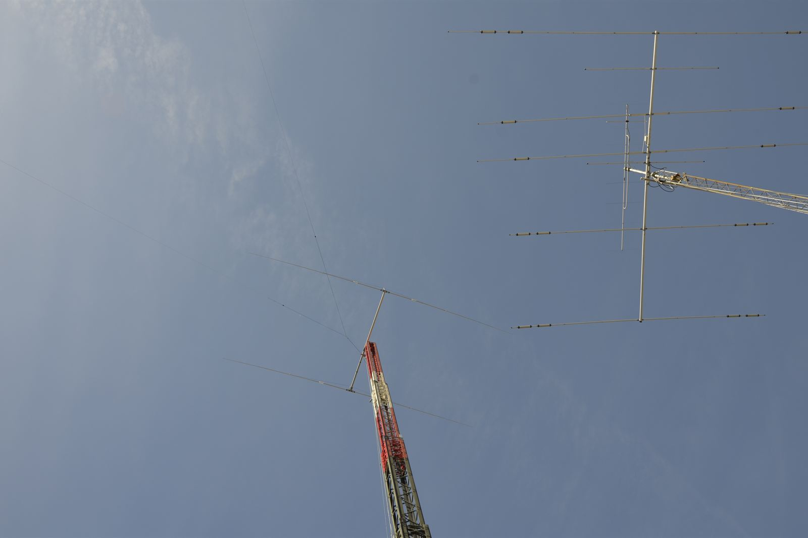

Central South University · Amateur radio BI2QVE
Shake the world,
and stay unknown.
I'm Eric Yin — from Shenyang, Liaoning, now studying mechanical engineering at Central South University in Changsha, and class monitor of Class 2602. Away from coursework I'm mostly wargaming, playing board games, or on the air.
- Mechanical engineering class
- 2602
- Student leadership roles
- 3 roles
- Amateur radio callsign
- BI2QVE
Student roles
Three levels: my class, my school, and the university.
Drag to browse · arrow keys work too
About
I'm Eric Yin, from Shenyang, Liaoning, currently studying mechanical engineering in Changsha. I like breaking complicated things into executable steps — a course plan, a class event and a wargame all feel like the same kind of problem to me.
Off duty I'm on the air as BI2QVE, at a board game table, or replaying a battle from decades ago. Different hobbies, same skill: making a call while the information is still incomplete.
Day to day
Coursework, student leadership, wargaming, board games, and amateur radio
- Studying Central South University · Mechanical Engineering
- From Shenyang, Liaoning
- Now in Changsha, Hunan
- Languages 中文, English
- Callsign BI2QVE
- Updated today
Interests
The part of life without a syllabus.
-

Rocco Pier Luigi Moroboshi / Wikimedia Commons · Public domain
A battle laid out on a table
Reading rules, moving counters, reviewing decisions. My favourite part is the ten minutes of argument afterwards.
-

Tarasna0922 / Wikimedia Commons · CC BY-SA 4.0
A small experiment in cooperation
I prefer the games you can only win by explaining yourself clearly — closer to student work than it sounds.
-

Ptolusque / Wikimedia Commons · CC BY-SA 4.0
Saying hello on the air
A handheld, a length of wire, and a voice a few hundred kilometres away. Still feels like magic.
{kind=link}
{kind=link}
{kind=link}
Want to talk about something?
Wargames, board games, amateur radio, or anything about student work — happy to talk about any of it. Contact details will go here once they're ready.
- Email Not public yet
- WeChat Not public yet
- GitHub Not public yet
- Amateur radio BI2QVE